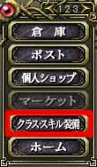
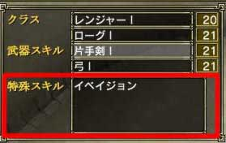
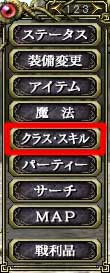

アイテムにより取得できる特殊クラススキルは存在します。ローグならば「フィアーの書」などです。
このようなアイテムを入手しても、持っているだけでは意味がありません。まずスキルの書を読んでください。さらに一部のスキルはホームで装備しなければ使えません。
ランク2、3の特殊クラススキルの一部はクエストにより取得することになります。これらのスキルを教えてくれるNPCは各国に点在しており、条件を満たしたプレイヤーは直接彼らに会いに行く必要があります。どのようなスキルがあり、取得するためにはどんなクエストをこなさなければならないかは、「ソーサリアンオンライン攻略@wiki」などを参考にしてください。
またSSアイコンのクラスはホームで装備する必要があります。このようなスキルは、まずホームに戻りメニュー3ページ目の「クラス・スキル装備」を開き、「特殊スキル」の項目に登録しなければないけません。登録すれば、それ以降自由に使うことができますが、マクロを組んだ方がはるか便利です。
またクラスを変更すると、使えなくなった特殊クラススキルは自動的に登録解除されます。しかし、新しく選んだクラスのクラススキルは登録されませんので、再度登録が必要となります。
 
(左：メニュー 右：特殊スキルの欄)
注意：「イベイジョン」は1Hアイコンのスキルですので、現在は装備する必要がありません
取得したクラススキルがどのようなものかを調べるには、メニュー1ページ目の「クラス・スキル」から「特殊スキル」を選択してください。マウスパレットのスキルボタンや、キーボードの「K」を押すことで表示されるスキルウィンドウでも一部のスキルの情報は見られますが、スキルウィンドウに表示されるのはプレイヤーが発動させる必要のあるスキルのみなので、メニューから選んだ「特殊スキル一覧」の方が確実です。
 |